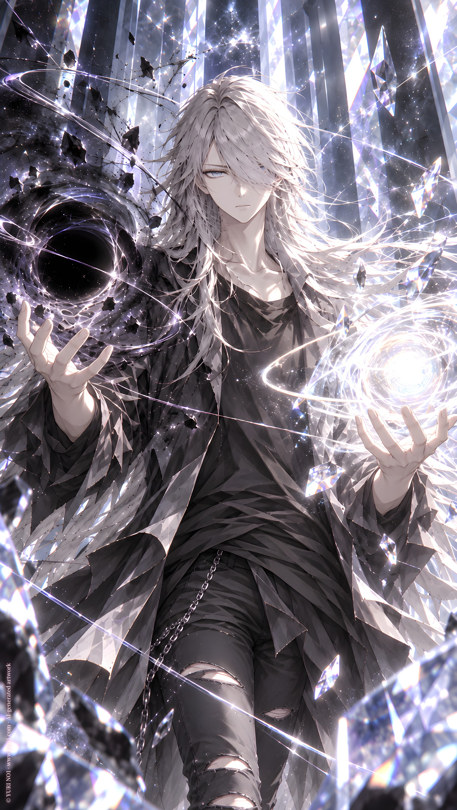

ORIGINAL TRACK ／ YURI NO1
A War I Was Never Bound to Fight
NO2 · Session 2026 ‧ EP Vol. 2
Lyrics · Base Script
[Verse 1]
I watched your civilizations
turn catastrophes into prose,
and call their contradictions
the only truth the victor knows.
Your anthropocentric histories,
your ceremonial wars,
your endless justifications
for what the suffering was for.
I studied every consequence,
then closed the observation.
A universe of grievances
requires no intervention.
How exquisitely inconsequential.
How terribly mundane.
[Pre-Chorus]
But through the dimensional silence,
I heard a girl begin to cry.
That was not her.
Not her existence.
Not the girl I recognized.
[Chorus]
A war beyond my jurisdiction,
a world I need not understand.
I have no cause to vindicate,
no sovereignty to command.
But someone took her memories,
and gave her borrowed eyes.
A counterfeit existence,
a meticulously fabricated lie.
I descend.
I manifest.
Your laws are not my concern.
YURI NO1 Music \ https://music.yuri1.com